La soglia:
il punto in cui lo spazio cambia
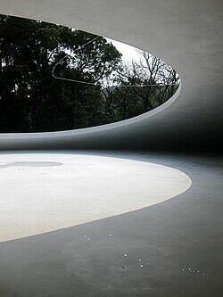
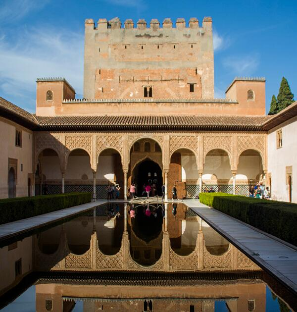

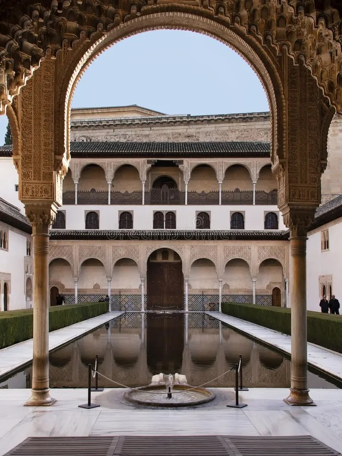
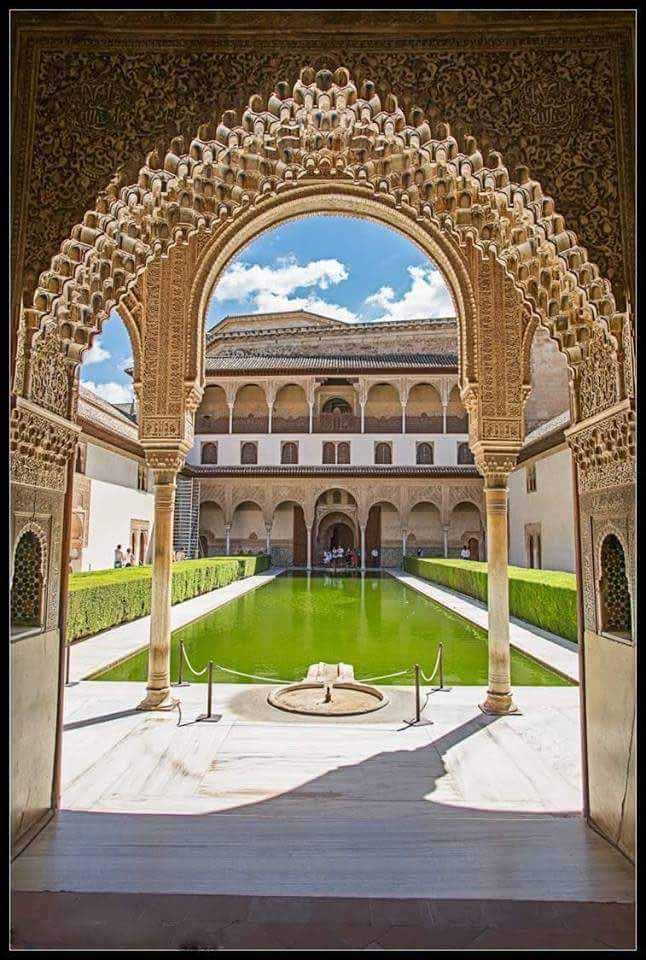
La Corte dei Mirti dell’Alhambra offre uno degli esempi più raffinati di soglia come trasformazione percettiva. L’architettura islamica nasrida evita l’opposizione netto-interno/esterno tipica dell’Occidente e costruisce, invece, una sequenza continua di transizioni. Qui, la soglia è il portico che media tra gli ambienti ombrosi e densi degli interni e la luminosità abbagliante del cortile centrale. Attraversarlo significa sperimentare uno slittamento atmosferico: la luce si diffonde attraverso i trafori, i ritmi delle colonne scandiscono il passo, l’acqua della vasca riflette e moltiplica ciò che l’occhio percepisce.
La soglia diventa un filtro: attenua la luce, corregge lo sguardo, produce profondità. La percezione non cambia per contrasto ma per modulazione. L’architettura non separa, ma calibra le intensità del paesaggio interno della corte.
Per la lezione 6, questo caso è fondamentale perché mostra la soglia come strumento progettuale: un luogo in cui l’architettura non definisce semplicemente un limite, ma costruisce un’esperienza. È la soglia a fondare l’identità atmosferica dell’Alhambra: un equilibrio delicato tra ombra e riflesso, tra geometria e vibrazione luminosa, tra misura architettonica e vita sensoriale dello spazio.

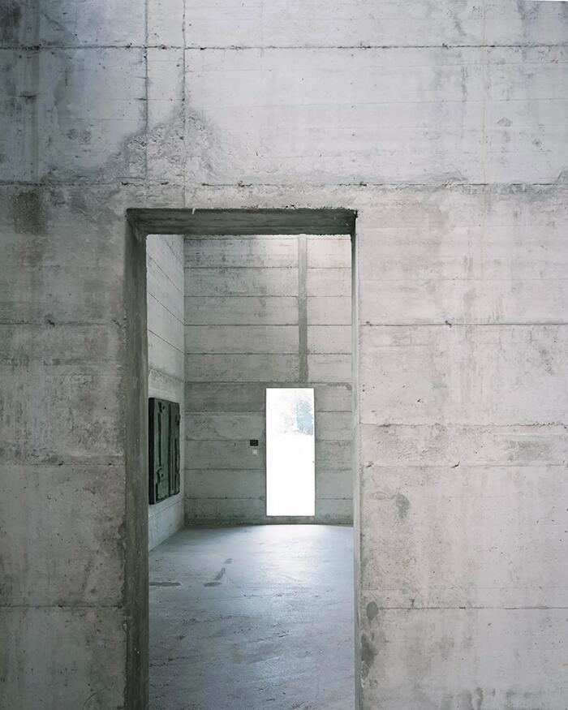
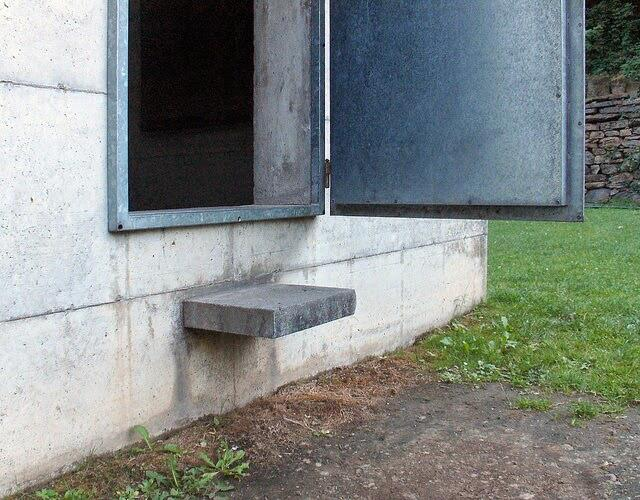
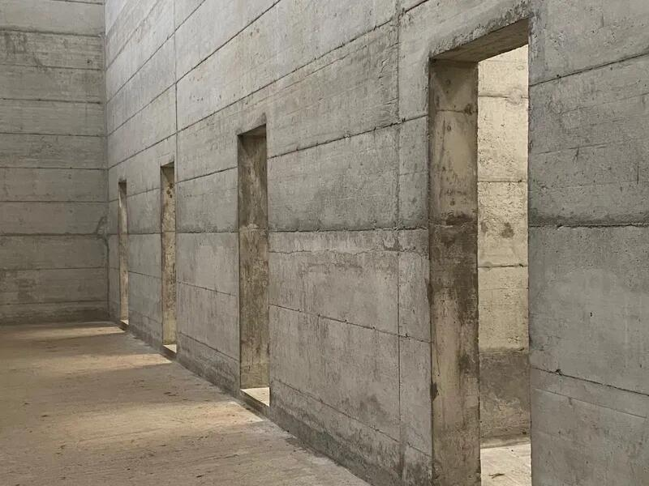
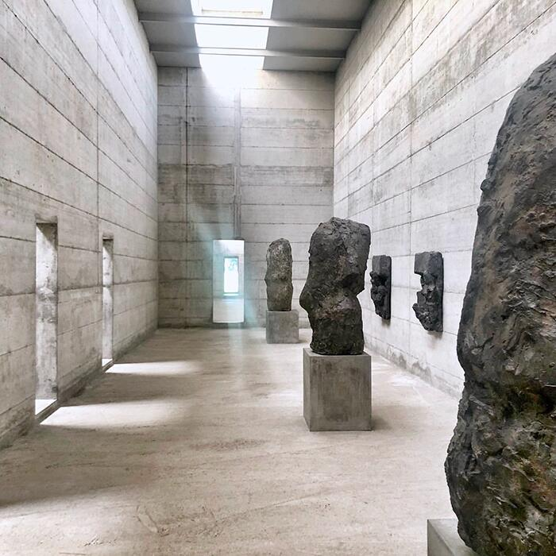
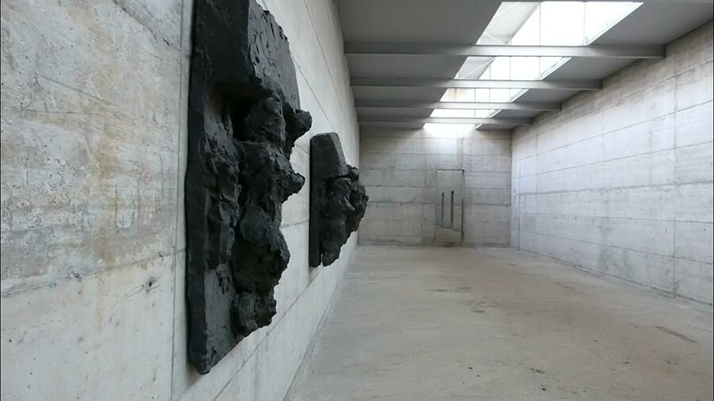
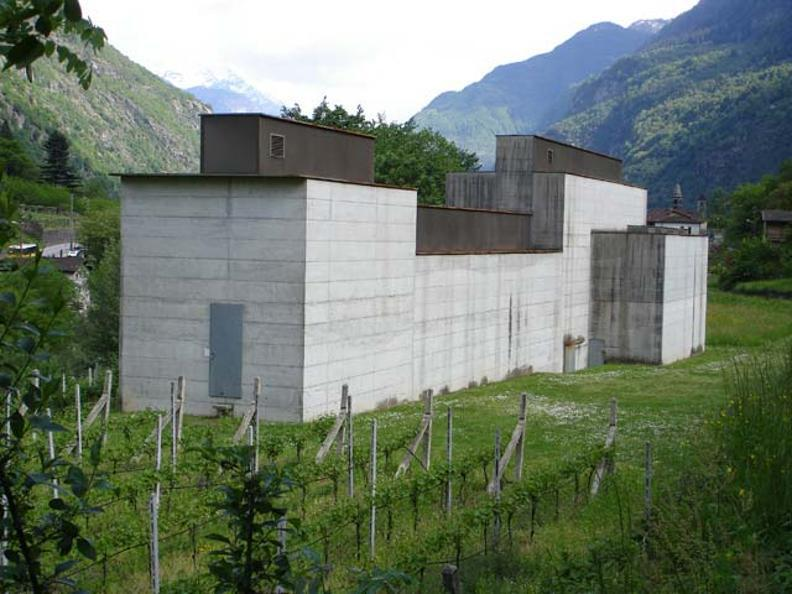
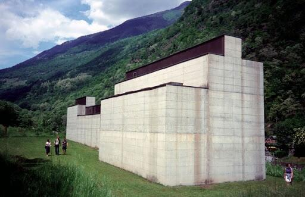
A La Congiunta la soglia non è un varco funzionale, ma un vero evento percettivo: un punto in cui il corpo comprende immediatamente che lo spazio sta cambiando natura. Märkli costruisce questa transizione con una radicale economia di mezzi. Una fenditura nel volume, un ingresso laterale quasi anonimo, un breve tratto compresso che costringe a rallentare: è qui che il visitatore attraversa un confine immateriale tra il paesaggio luminoso della valle e l’interno oscuro, denso, monolitico del museo.
La soglia funziona come uno strumento di disorientamento controllato: lo sguardo non vede ancora lo spazio principale, ma ne percepisce già la qualità atmosferica. Un tenue riflesso sul calcestruzzo, un suono ovattato, la brusca caduta di luce segnano la perdita della continuità con l’esterno. Non si entra semplicemente in un edificio: si entra in un’altra condizione percettiva.
Märkli dimostra che la soglia può essere un dispositivo critico estremamente potente: trasforma la temperatura dello spazio, modifica l’orientamento corporeo, predispone l’attenzione. Nell’interno di La Congiunta — una sequenza di sale grezze e silenziose — questo breve passaggio iniziale acquista un valore quasi rituale: è l’atto che prepara il visitatore all’incontro con le sculture di Josephsohn, permettendo allo spazio di assumere il proprio carattere contemplativo.
Qui la soglia non dichiara una separazione, ma genera una nuova atmosfera. È il punto in cui l’architettura diventa percezione.
La soglia è l’evento che definisce l’intero edificio.

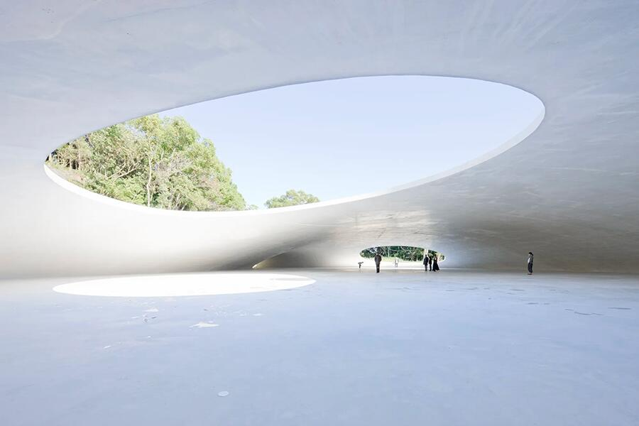
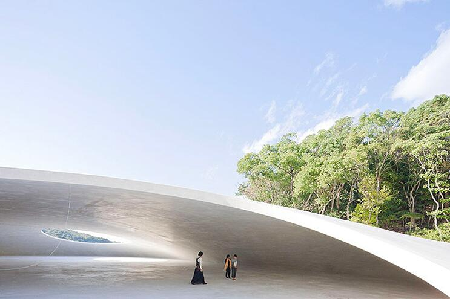
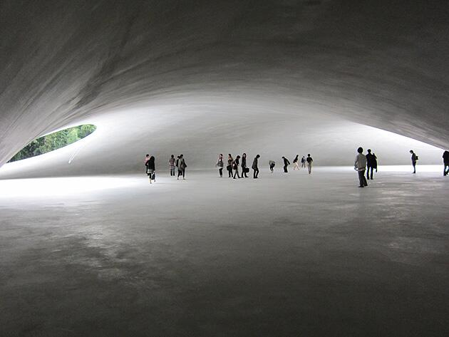
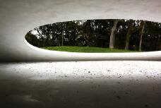
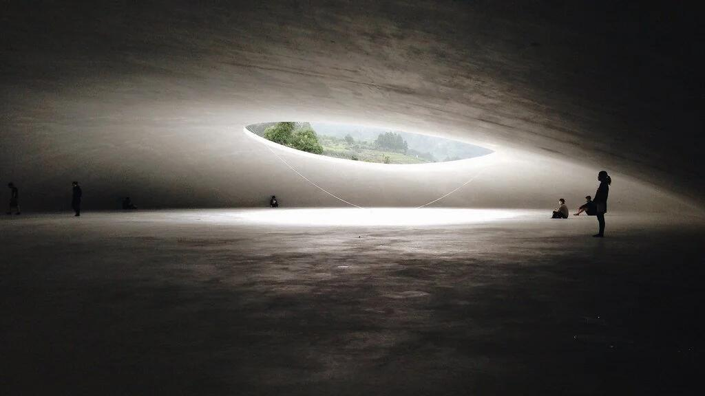
Il Teshima Art Museum è una lezione radicale sulla soglia come trasformazione. Non c’è facciata né porta in senso tradizionale: l’accesso è un passaggio graduale dal pendio coltivato alla superficie liscia del pavimento, dal rumore del vento all’ovattamento interno. Entrare significa attraversare una differenza di luce, acustica, temperatura. Il gesto di togliersi le scarpe è già un dispositivo percettivo: rende consapevoli della materia, della micro–pendenza del suolo, dell’umidità che varia da zona a zona.
La calotta di calcestruzzo, sottilissima, è incisa da due grandi aperture: non semplici fori, ma soglie attive che connettono direttamente l’interno al cielo. La luce discende radente o verticale secondo l’ora, ridisegnando le profondità; il suono della pioggia amplifica la volta come una camera di risonanza; la brezza muove l’aria e con essa le piccole gocce che si formano per condensazione, scivolano e si raccolgono in rivoli. Ogni elemento modifica l’altro: la soglia non separa, mette in relazione.
Anche l’orientamento del corpo nasce da queste differenze: ci si muove seguendo i flussi d’acqua, sostando nelle zone più luminose, cercando il fresco o il tiepido. La geometria controllata (spessore, raggio, curvatura) non produce un’immagine, ma condizioni affinché i fenomeni accadano: il progetto orchestra i passaggi di stato tra dentro e fuori, secco e umido, silenzio e risonanza, ombra e chiarore. Ne risulta uno spazio in cui la soglia è ovunque: nelle aperture, nelle variazioni del suolo, nell’aria che cambia. Il museo non rappresenta la natura; la rende esperibile attraverso un continuum di trasformazioni percettive. Qui la soglia non è linea, ma campo: il punto in cui lo spazio cambia e, cambiando, fa nascere la forma.